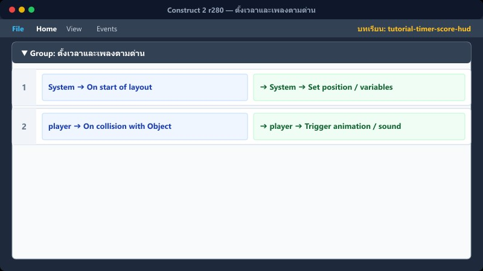
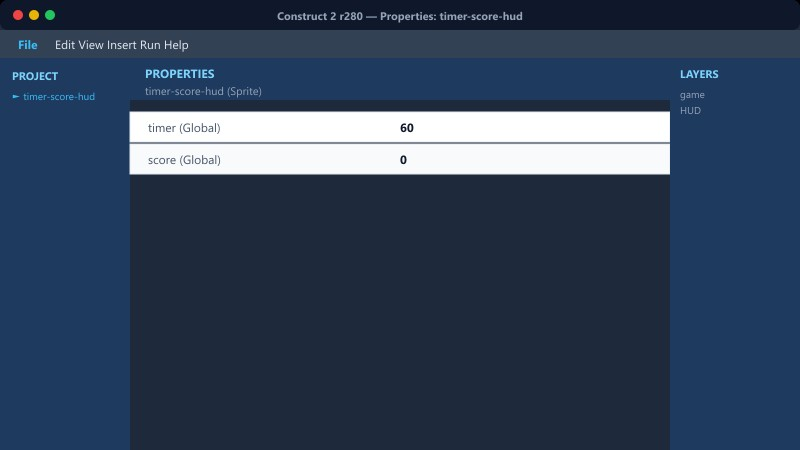
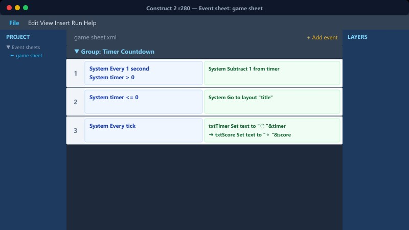

ตั้งเวลา 180 วินาที→ลดทุก 1 วินาที→แปลง format นาที:วิ→บวกคะแนน→หมดเวลา = แพ้
1
ตั้งเวลาและเพลงตามด่าน

ใช้ LayoutName กำหนดค่าเริ่มต้น
System → On start of layout + LayoutName = "game" → เวลา=200, Play "Music2" + LayoutName = "game2" → เวลา=150, Play "PirateShip" + LayoutName = "game3" → เวลา=120, Play "ElmyraMiniboss"
📍 ที่ไหนใน C2: กลุ่ม "เริ่มด่าน+เพลง+เวลา"
2
นับถอยหลังเวลา
เช็กว่ายังไม่จบด่านก่อนลดเวลา
System → Every 1 second กำลังจบด่าน = 0 Subtract 1 from เวลา
📍 ที่ไหนใน C2: game sheet + Layout HUD
3
เวลาหมด (Time Up)

แสดง popup และบันทึกอันดับ
เวลา ≤ 0 AND กำลังจบด่าน = 0 (Trigger once) แสดง Layer "popup" ล็อกตัวละคร player Set บันทึกอันดับ = 1
📍 ที่ไหนใน C2: game sheet + Layout HUD
4
แปลงรูปแบบเป็น นาที : วินาที

แสดงผลเวลา
timer_text → Set text to zeropad(floor(เวลา / 60), 2) & ":" & zeropad(เวลา % 60, 2)